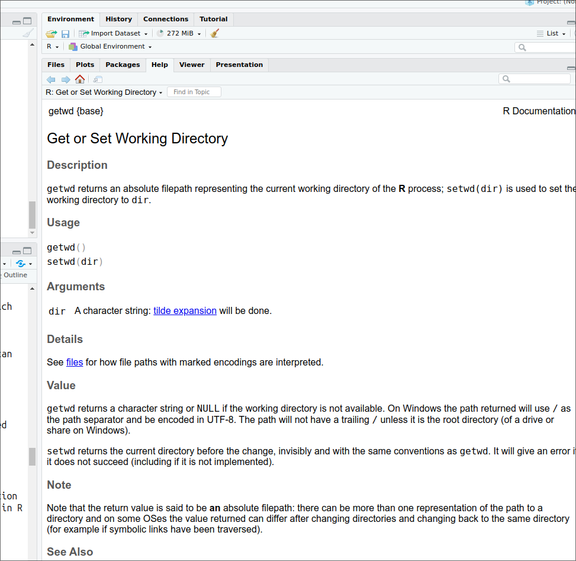
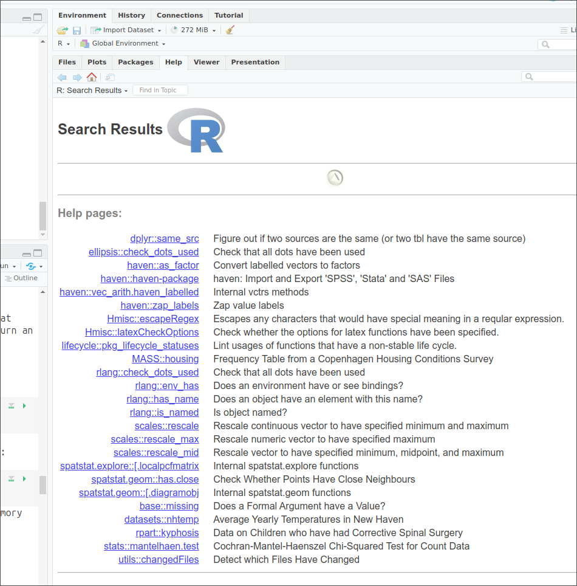
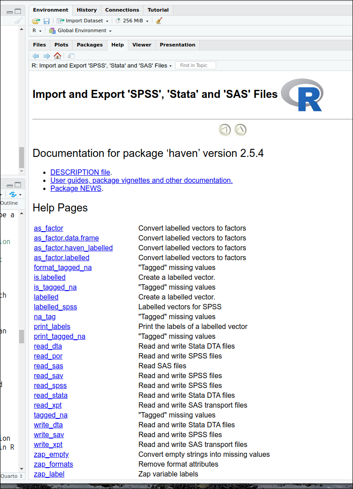

> command(parameter1, parameter2, ...)2.1 Download and installation
R can be downloaded for free from the CRAN website, installed and run like any other application. Versions for Windows, Mac and Linux are available. The standard and rather minimalist interface that appears when the programme is launched on Windows is shown below.

This interface merely allows the user to type in commands one by one in the console, and to install packages via pull-down menus. This setup is however rather minimal, not very ergonomic or user friendly. As with other statistical software, the preferred way of interacting with R for most users consist in writing code in separate files (also called scripts files) that are run whenever needed, which is not directly feasible with the standard R GUI.
Writing R code and running script files are made easier via an Integrated Development Environment (IDE) such as RStudio for beginners to intermediate users Sublime Text, or the StatEt module for Eclipse for more advanced programmers. All are free, available for Windows, MacOS and Linux and offer users a large number of functionalities, such as syntax highlighting, integration with Github and Markdown/Quarto, and document previsualisation.
Since RStudio has a large user base and is relatively easy for beginners, we will use it throughout this guide. However, in order for the guide to remain accessible to users who do not work with other IDEs, RStudio is used below as a mere interface to the R engine without relying on its advanced features.
2.2 Installing and setting up RStudio
RStudio needs to be installed separately from R. The program can be downloaded from the RStudio website. The site will automatically generate a link to the version most compatible with the computer used to access it. Once downloaded double click on the file and follow the installation instructions.
By default, the R Studio interface consists of four main panels, respectively known as the Script Editor (top left panel), the Console (bottom left panel), the Environment (top right panel) and the File/Directory/Help/Viewer (bottom right panel).

As this rather complex interface can be visually overwhelming for some users and is not required for the purpose of this guide, we will minimise the Global Environment and Files/Directory/Help panels by clicking in the center of the window and dragging right to the edge of the screen. This way, only the script and console panels remain visible. The tiling of the panels can also be customised in Tools>Global Options>Pane Layout. For instance, Script can be moved to the bottom of the window and Console to the top:

2.3 Interacting with R
As already mentioned, one can type R commands directly in the console of RStudio and/or by writing sequences of commands in a script file.
Most R commands – also known as functions in R jargon – adopt the following syntax:
All R commands are followed by brackets, even if some of them take no parameters.
In the following example we are going to set up a default working directory, that is the default location where files will be opened from and saved to in the , by using the getwd() and setwd() commands. First, let us visualise the current default working directory.
getwd()[1] "/home/mscsepw2/OneDrive/projects/rguide/UKDS_RGuide"Let us say that all the files used in this guide arre going to be located in a folder called ‘R_UKDS’, inside ‘My Documents’. To tell R to use the folder ‘R_UKDS’ we type:
For Windows:
> setwd("C:/Documents and Settings/<INSERT YOUR USERNAME HERE>/My Documents/R_UKDS")For Mac:
> setwd("/Users/<INSERT YOUR USERNAME HERE>/Documents/R_UKDS")For Linux:
setwd("~/Documents/R_UKDS")Typing getwd() confirms that the change has been recorded.
getwd()[1] "/home/mscsepw2/Documents/R_UKDS"
Notes:
Any character string that is neither a command or the name of an object (such as a variable name) needs to be put between inverted commas or quotation marks, otherwise it will be interpreted as the name of an object and R will return an error.
see the example below about loading user-created packages;
Even when no parameters are specified for a command, brackets are compulsory as shown in the
getwd()example above;R uses forward slashes rather than backslashes (unlike Windows applications, but like Linux) to separate directories. Using backlashes will return an error message;
Although most R commands accept a large number of options to be specified. In many cases default values have been ‘factory set’ so that only the essential parameters need specifying.
Being object-oriented, the output of most R commands can be either directly displayed on the screen (as in the above example) or stored in objects that can be subsequently reused in further commands. This feature separates R from traditional statistical software.
For instance, typing:
a<-getwd()will store the output of getwd() (that is, the name of the current default directory) into an object called ‘a’. In order to view the content of a, one can just type its name:
a[1] "/home/mscsepw2/Documents/R_UKDS"
Writing R scripts via R Studio
Most users will want to write their code in a script file, similar to the ‘do’ file in Stata or syntax file in SPSS. R script files can be identified with their .R suffix. To open an existing R script in RStudio select File>Open File (shortcut: Control+O) then the relevant script file. To create a new script select File>New File>R Script (shortcut: Control+Shift+N) this will open a new script window in which to type commands.
2.4 Installing and loading packages
Apart from a basic set of commands and functions, most of the tools offered by R are available in packages that need to be installed and downloaded separately from within R. This can also be done with the pull-down menus of RStudio.
For example, to install the ‘foreign’ package one need to type:
install.packages("foreign",repos = "https://cloud.r-project.org")If the address of the package repository is not specified via the repos= option, a pull-down menu will appear, asking for one. Choosing https://cloud.r-project.org will automatically select the closest mirror site. Packages installation only needs to be done once.
Originally, foreign enabled users to import Stata (version 12 or older) or SPSS datasets. For Stata datasets saved under version 13 and above as well as SPSS datasets from version 16 onwards, the haven package is required.
install.packages("haven",repos = "https://cloud.r-project.org")To use a package already installed in the local R library, the library() command is needed:
library(haven)Simply typing:
> library()Will list all packages installed on the computer that can be loaded in memory. This can be a rather long list!
In addition to the main archive of R packages, the CRAN website provides a series of manuals, including Writing R Extensions, which describes how users can write their own packages and submit them to CRAN.
Once a package is installed, it will be permanently stored in the local R library on the computer, unless it is deleted it with the remove.packages() command (this is not advised as this can break dependencies between packages!).
> remove.packages("name of the package")Packages required for an analysis have to be loaded every time the programme is launched or a new R session is started (But not every time a syntax file is run!).
2.5 Using R’s internal help system
Within R, the most straightforward way to request help with a command consists of a question mark followed by the command name, without a space in between. The standard help system in R (unless using RStudio or Eclipse) relies on the default web browser installed on your computer (ie Chrome, Firefox or Edge in most cases) to display pages.
Typing:
> ?getwd Is equivalent of:
help('getwd')and will open the help page for the getwd() command in the default web browser or the viewer tab of RStudio.

This will work for any command directly available in the Base package that is loaded at startup or in other packages loaded via the library() command. Otherwise, R will return an error message.
Typing two question marks followed by a keyword will search all of R for the available documentation for that keyword in the installed packages:
??haven
An index of all commands and functions in the haven package can be obtained by typing:
help(package='haven')
Note: this command only works because the haven package was previously loaded in memory with the library() command.
More information about where to find help when using R is provided at the end of this document.
2.6 Objects
R is an object oriented language, which means that almost any information it processes is stored as ‘objects’ (i.e. containers) that can be manipulated independently. During an R session, multiple objects are available simultaneously (for instance datasets, but also summary tables or new variables produced from it). Typing:
> ls()will list all the objects that are currently in memory.
Objects belong to classes or types which have distinct properties. There are many classes of objects in R. By comparison, Stata has only macros, variables and scalars that are directly available to most users. Common object classes include:
- factors: these are equivalent to categorical variables (see below);
- numeric: numerical variables – whether continuous or ordinal;
- character: alphanumeric variables;
- vectors: a list of items that are of the same type;
- lists: more complex list of objects, functions or datasets
- data frames (datasets);
- matrices, etc.
Some operations are understandably only possible with certain types of objects: for example, mathematical functions can only be used with numeric objects.
More advanced users can also create their own object classes. Describing R objects and their properties is well beyond the purpose of this guide and users interested should consult the online documentation for further explanations.
To create or assign a value to an object, one uses the assignment operator (<-). For example, we can assign the value 5 to an object called x.:
x <- 5 If you type the letter x, the value ‘5’ will be returned in the console.
x[1] 5The object x will appear in the R environment after the ls() command.
ls()[1] "x"Deleting objects
The rm() function can be used to remove objects from the environment (session). These objects can be variables, lists, datasets, etc. For instance, to remove the object ‘x’, or the fictitious dataset called ‘mydata’:
rm(x)
ls()character(0)> rm(mydata)Among the various classes of objects one may use in R, a few are essential to understand when analysing survey data. Their characteristics are briefly listed below;
Data frames
Data frames are typically the kind of objects in which survey datasets are stored. They are similar to datasets in traditional statistical software or worksheets in Microsoft Excel or LibreOffice Calc. They are objects that have indexed rows and columns, both of which may have names. Columns correspond to variables and lines or rows to observations. Any cell can be uniquely identified by its position.
Let’s assume that we have a small data frame called ‘mydata’. Here are a few basic commands to examine it:
Determining the size of a data frame:
the dim() command returns the number of rows and columns of a data frame
dim(mydata)[1] 50 6R tells us that our data is made of 50 rows and 6 columns, in other words of 50 observations and 6 variables.
What if I wanted a quick overview of the dataset?
head(mydata) RSex skipmeal Married
1 Female NA Married/living as married
2 Female 1 Separated/divorced
3 Female NA Married/living as married
4 Male NA Never married
5 Male 1 Never married
6 Male NA Married/living as married
Poverty1 HEdQual3
1 Was not Higher educ below degree/A level
2 Was not Higher educ below degree/A level
3 Was not O level or equiv/CSE
4 Was not Higher educ below degree/A level
5 Was not No qualification
6 Was in poverty <NA>
NatFrEst
1 5
2 30
3 50
4 50
5 50
6 10The head() command displays the first six lines of the dataset. Depending on the number of variables the output of head() can become quickly overwhelming, as the size of the lines on most screens is limited!
Obtaining the names of variables (or columns) in the dataset: This can be done using either ls() which we already have used, or the names() commands. ls() returns the variables names, sorted alphabetically, whereas names() returns them in their actual order in the data frame.
ls(mydata)[1] "HEdQual3" "Married" "NatFrEst" "Poverty1"
[5] "RSex" "skipmeal"names(mydata)[1] "RSex" "skipmeal" "Married" "Poverty1"
[5] "HEdQual3" "NatFrEst"We can see that in the data frame, the “RSex” column comes in fact before “Poverty1”.
Accessing variables:
Variables (or columns) of a data frame can be accessed by their name preceded by the $ sign. For example:
mydata$NatFrEst [1] 5 30 50 50 50 10 1 NA 5 50 60 25 30 3 25 10 80
[18] 5 50 50 40 45 2 82 60 40 10 10 40 15 30 30 2 10
[35] 75 99 70 50 10 30 1 10 85 45 70 25 40 30 10 25
attr(,"value.labels")
named numeric(0)Lists all values of NatFrEst, as well as additional technical information at the bottom.
Alternatively, variables (columns)and observations (rows) can be identified numerically by their position in the data frame using square brackets:
dataframe[row number,column number]Given that RSex is the first column of our dataset, typing
mydata[,1] [1] Female Female Female Male Male Male Male
[8] Female Male Male Male Female Female Male
[15] Female Female Female Female Female Female Male
[22] Female Female Male Male Female Female Female
[29] Female Male Female Female Female Female Male
[36] Male Female Female Male Female Male Male
[43] Female Male Female Male Female Female Female
[50] Male
Levels: Male FemaleReturns the same output as previously, that is all recorded observation of NaRfEst. Not specifying a row or column name within the square brackets tells R to display them all.
mydata[6,] RSex skipmeal Married
6 Male NA Married/living as married
Poverty1 HEdQual3 NatFrEst
6 Was in poverty <NA> 10Returns the values of all the variables for the sixth row of the data frame. Specifying both a row and column number, will return a unique observation:
mydata[6,6][1] 10which in this case is 10. Finally, more than one column or row can be displayed by concatenating their number using the c() function:
mydata[c(6,9), 6][1] 10 5The above command returns respectively the sixth and 9th observations for the sixth column. Explicit columns names can be used instead of their number, provided that they are placed between inverted commas:
mydata[c(6,9),'NatFrEst'][1] 10 5Returns the same result as above.
We can explore other types of objects commonly found in R using the same dataset. The type of a variable can be displayed by simply using the class() function.
Numeric
Numeric objects are simple numerical vectors (ie a single or a list of numbers). They can be standalone or part of a data frame. Such is for example the case of the variable NatFrEst, which measures the proportion of people making wrong benefits claims estimated by respondents .
class(mydata$NatFrEst)[1] "numeric"Character
Character objects are alphanumeric vectors, that is variables which consist of text string(s).
class(mydata$Married)[1] "character"head(mydata$Married) ### Let's look at the first five rows of Married[1] "Married/living as married"
[2] "Separated/divorced"
[3] "Married/living as married"
[4] "Never married"
[5] "Never married"
[6] "Married/living as married"Factors
A distinctive feature of R is that categorical variables whether ordinal or polynomial are stored in objects known as factors. Factors should be thought of as a special type of variable with a discrete set of values, known as levels. Factors can be unordered or ordered. In our data, Rsex (Gender of the respondent) is such an object:
class(mydata$RSex)[1] "factor"The main difference between factors and traditional categorical variables in Stata or SPSS is that they do not consist of arbitrary numerical values with which substantive value labels are associated.
It is always a good idea to check the ordering of factor levels in a newly created variable with the level() command
levels(mydata$RSex)[1] "Male" "Female"returns the levels of RSex. ‘Male’ is the first level of Rsex, and ‘Female’ the second one, irrespective of the values originally assigned and described in the codebook of the dataset.
It is possible to change the ordering of factor levels with the factor() function.
mydata$RSex.n<-factor(mydata$RSex, # We re-use the existing factor levels from Rsex
levels = levels(mydata$RSex)[c(2,1)]) # and reorder themThe above code tells R to create a new factor variable -RSex.n - whose levels are identical to RSex, but with ‘Female’ (level number 2 in the original variable) coming first, and “Male” (level number 1) , second. The name of the new variable is arbitrary.
We can check the outcome:
levels(mydata$RSex.n)[1] "Female" "Male" In the next chapter an alternative approach to dealing with categorical variables imported from SPSS or Stata is presented.